DECK: CS::OS
操作系统概述
定义与设计目标
操作系统：
- 职能：资源管理系统
- 存在：本质上是软件程序
- 最基础最中央的部分是内核kernel
设计目标：
- 可靠性和安全性
- 异常处理机制：中断
- 权限管理系统：特权
- 易用性
- 方便用户使用系统资源：系统调用
- 高效性
- 任务执行设计：批处理系统-》分时系统
- 公平性
- 进程管理的冲突与饥饿starvation
- 可拓展性、易维护性
设计与实现
从目标/需求开始：user goals & system goals
机制和策略相分离 flashcard

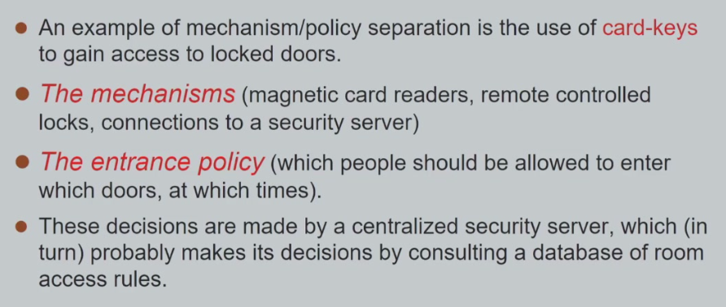
机制/规则被存在酒店的中心服务器上（database） 和策略分离开了,比如配置文件就相当于policy
例题
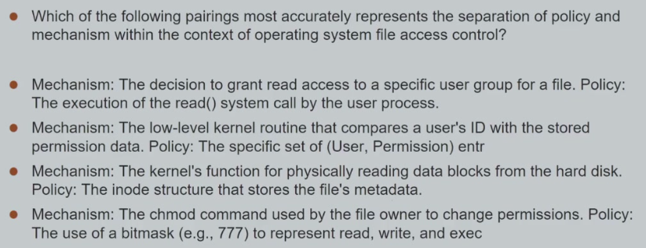
操作系统提供的三种能力
复用 multiplexing
- cpu复用 多个程序共享 时间分配复用
- 内存复用 多个进程 空间分配复用
隔离 isolation
- 程序之间不能访问对方的数据
- 数据范围权限的隔离
- 用户 kernal
抽象 abstraction
进程间通讯 interaction
操作系统的整体设计
计算机系统架构
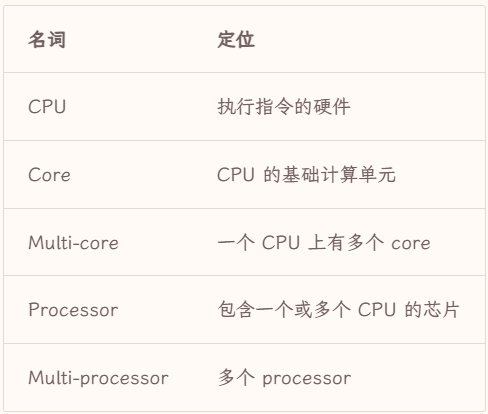
根据处理器的数量和组织形式，存在三种计算机系统架构
- 单处理器
- 有且仅有一个单核通用处理器general-purpose processor
- 可以有若干专用处理器用来处理特定指令，并不运行线程
- 多处理器系统
- 有多个单核通用处理器的系统，处理器共享同一块主内存，通过总线或者交换网络连接
- 增加了处理西数量能够增加吞吐量throughput，也就是单位时间内处理的任务数量，但是增加并不线性（处理器之间通信需要时间和额外开销）
- 集群系统
- 通过冗余实现高可用服务，通过并行实现高性能计算，由多个独立的计算机系统作为节点，通过高速通信网络相互连接形成
- 分为对称和不对称两种，对称集群中各个节点互相监督，不对称集群中存在“替补”监督工作中的节点，或者接替有问题节点的工作。
操作系统的任务执行设计
1. （单道）批处理系统 flashcard
batch processing system
- 批处理：若干任务被作为一整批交付给操作系统，操作系统会自动按照顺序串行serial执行任务
- 单道：一段时间内内存中只有一道程序在运行（进程process ），结束后再切换到下一个任务
问题：当存在I/O操作任务时，由于耗时，CPU长时间处于空闲状态
I/O
即CPU和RAM（主内存）与“外部世界”之间进行数据交换的过程
- 存储设备（磁盘IO）
- 网络设备（网络IO）
- 人机交互设备
- 其他外部设备
特点：速度慢。
2. 多道批处理系统 flashcard
multiprogramming batch processing system
- 一段时间内，四个进程 （job=process）都加载到内存中，并发运行（在A完成之前B可能也开始了）。当当前 job 发生 I/O 时，操作系统负责让 CPU 转而运行另一个 job。
- 但微观来看，多道批处理仍然是顺序串行的。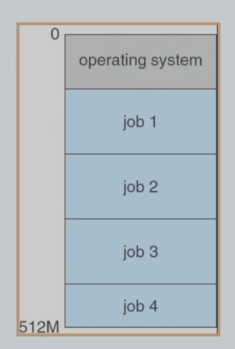
- 不关心运行的先后顺序（任意），只要同时加载进去就叫做multiprogramming。调度的部分是由jobschedule完成（批处理
- 原因：内存大，cpu强，有能力同时处理4个进程，因此就可以提升硬件的使用效果
- needed for硬件计算资源
CPU utlization - 交互性差，在完成任务前用户无法操作
并发与并行
并发**(concurrency)**是指两个或多个事件在同一时间间隔内发生，而并行是指两个或多个事件在同一时刻发生。逻辑上，并行是并发的子集。
3. 分时系统 flashcard
timesharing systems/multitasking
- multiprogramming的逻辑拓展：保留其内存中有多个进程的并发特点
- 处理器会在jobs上面轮流地赋予cpu资源，在进程间不断切换（很短的时间内），让用户察觉不到进程的切换/cpu的共享，达到近似于并行的效果。
- 注重的是用户的交互性
interactivity，允许多个用户同时使用同一台计算机，所有任务之间互相独立，互不干扰、互不阻塞，因此任务的最长周转时间减少，用户的操作也会被及时响应，实现了更方便进行人机对话。 - 对硬件配置有较高要求（每个用户的terminal）和调度算法
操作系统的结构设计
宏/巨内核(monolithic-kernels) flashcard
也叫单内核或大内核
- 将所有主要功能紧密耦合，操作系统效率高
- 维护十分困难；某个部分出现困难，整个系统都会受影响。
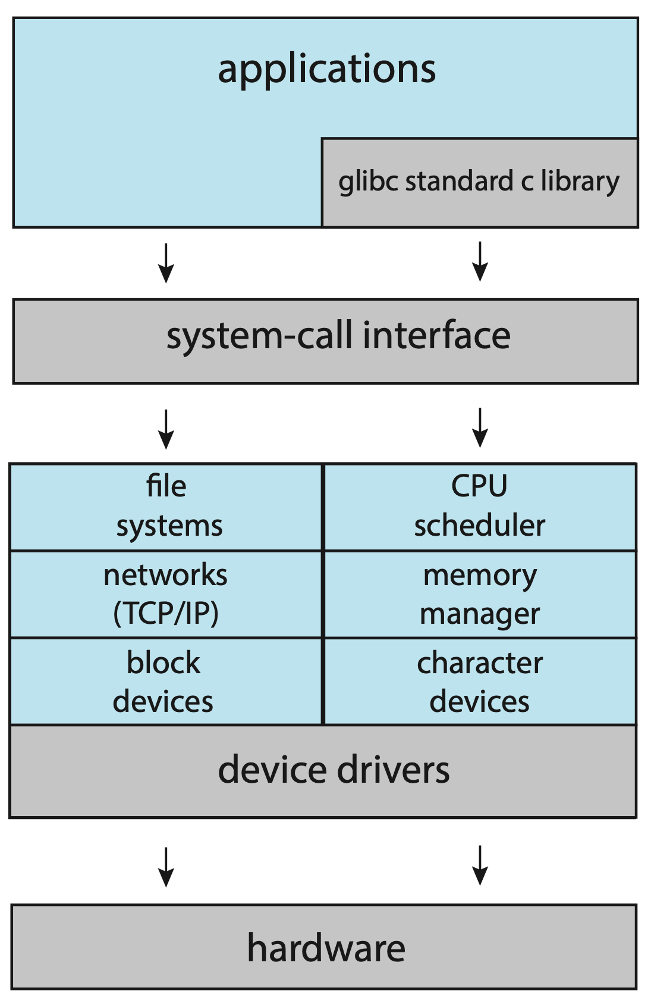
分层设计(layer approach)
- 将系统分为若干层，底层为硬件，顶层为用户接口，第 i 层只调用i−1 层提供的接口。每一层都实现良好的封装，于是开发过程中只需要逐步实现并调试验证每一层，再逐级向上开发即可；在维护或扩展过程中，只要修改每一层的内部实现，而不需要修改其它层的代码，这样就大大降低了开发和维护的难度。
- 由于每次执行一个功能都需要上下跨越多层，发生多次接口调用，分层设计下的系统效率往往都受到限制；不仅如此，要想真正意义上实现良好的分层设计，就需要对各层有良好的定义，这个设计难度是不小的。
微内核(micro-kernels) flashcard
- 将不是必要的东西都从内核拿出去，放到用户空间以用户态执行。只有通讯、内存管理、进程管理等基本功能直接运行在内核态。其他功能部件通过消息传递机制和内核互动。
- 维护扩展变得容易，自身效率得到提升，可靠性也提高了。但是很多模块移到usermode不安全

模块化设计(modules approach)
模块-接口法。理想的设计可以让系统多线并行，只要商量好接口就能独立实现，维护和扩展容易。但是设计开发很困难。
混合系统(hybrid systems)
宏内核和微内核的思路结合起来，是目前主流的操作系统模式
操作系统的运行原理
中断interrupts
中断（广义）是贯穿现代操作系统的一个重要技术，它使得“计划之外”的事情可以及时的被告知并处理（让产生意外的人自行上报这些意外） 现代操作系统都是中断驱动的
interrupt-request line flashcard
- CPU 有称为 interrupt-request line 的线路。CPU会在每一条指令结束后检测是否有中断发生，并会读取 interrupt number 并且以此作为 interrupt vector 中的 index 来跳转到对应的 interrupt-handler routine。
中断向量表 interrupt vector table flashcard
中断向量表是快速定位中断处理方法的手段。通过中断号来索引中断处理方法，实现了一种“随机访问”，大大加速了中断处理的速度。
分类
- 硬件引起的中断（外中断）
- 软件引起的中断（内中断）trap
- error 非主动的
- system call 程序主动的 调用操作系统的功能
riscv的对应术语区别
- 中断traps
- 硬件中断 interrupts
- 软件中断
- error→exceptions
- 系统调用→ecalls（环境调用）
cause a page fault
缺页 访问memory地址的时候由于对应的地址内容非法而产生的中断
过程
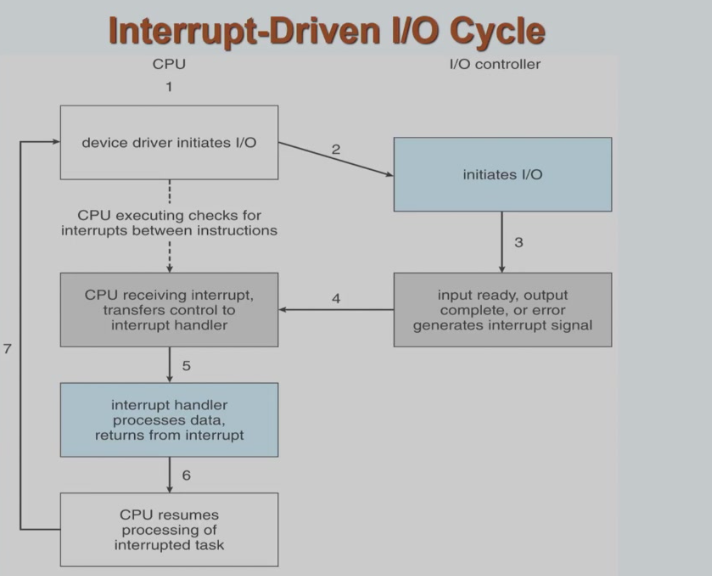
- device driver I/O与操作系统之间的驱动
- 左边：CPU
- 右边：I/O controller
I/Ocontroller发起中断之后，CPU对其进行处理，调用interrupt handler，处理好之后return到被中断的下一条指令重新开始运行 的这么一个循环过程
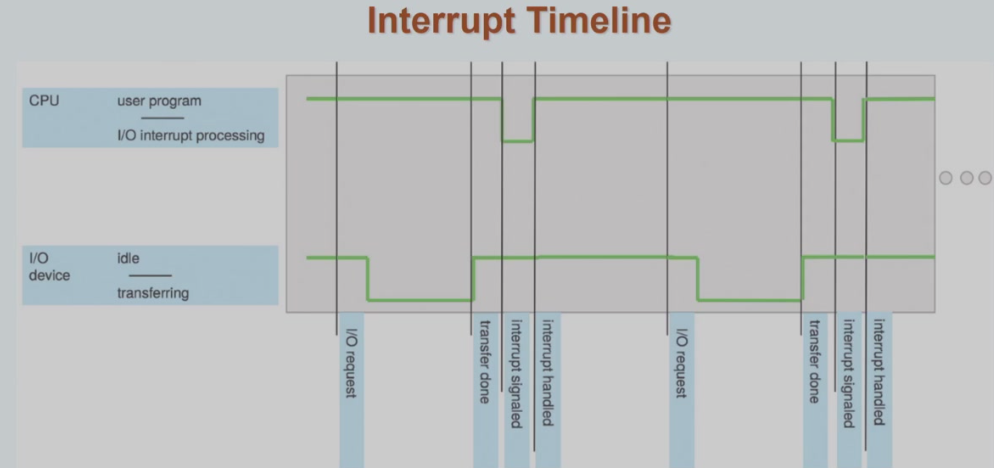
波动表示状态的改变
中断状态的保存
为了保证中断处理完成后仍能继续当前任务，操作系统需要保存当前任务的状态，以便完成中断处理后恢复当前任务的状态。
中断冲突 flashcard
中断处理也同样需要资源，这意味着中断也有可能产生冲突
- 优先处理优先级高的中断：中断分级
- 虽然低级的中断可以被高级的中断打断，但是保存和恢复现场状态的过程是不应当被打断的。
- 原子性行为不可被中断，重要任务不应该被中断：中断屏蔽
中断请求线
maskable interrupt-request line可屏蔽的中断 它可以在执行不可中断的关键程序之前被 CPU 关闭，等到关键程序结束后再解除屏蔽处理其中的中断。
2. non-maskable interrupt-request line不可屏蔽的中断 为一些不可恢复的内存错误等事件保留
计时器 timer flashcard
- 计时器需要一个固定频率的时钟以及一个计数器，在每个时钟周期令计数器减 1，当计数器归零时产生中断，告诉操作系统定的时已经到了
- 功能虽然基础但是十分重要，例如分时系统中就需要计数器来控制时间片的长度，又比如操作系统需要定期检查内存中的进程，以防止进程一直占用系统资源
特权模式privileged mode
允许用户程序执行常规操作，危险操作由专业人士执行。
工业上特权模式有许多复杂的实现形式，比如
双模式(dual-mode） flashcard
- 用户态 user mode
- 内核态 kernal mode
- Mode bit 为 0，表示 CPU 工作在内核态；mode bit 为 1 时，CPU 工作在用户态。modebit由特权指令进行管理。
特权指令(privileged instruction)
例如 I/O 控制，计时器管理，中断管理等。这些指令只能在内核态下执行，而用户态下执行这些指令时会认为这条指令不存在。
是不是在kernalmode下运行的所有指令都是特权指令？
不是，非特权指令也可以运行在kernalmode下，但是特权指令只能在kernalmode下运行
双模式之间的交互
用户委托进行危险操作的过程：比如writing data to a disk drive ，用户程序想要使用kernal提供的服务，需要调用系统调用（system call）切换到kernelmode。
- 具体实现上即发生软中断（trap）的时候
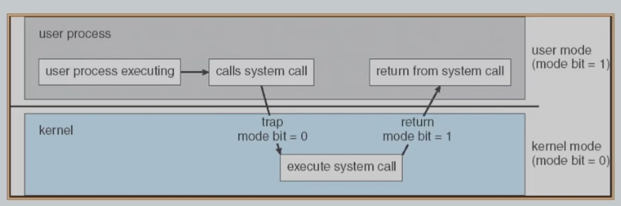
细节：将usermode本身执行的上下文保存下来以便于恢复等 - 系统调用可能需要传递参数。参数可以放在寄存器里直接传递；也可以放在一块内存中，用寄存器传递地址；也可以用栈传递。
能否让中断运行在usermode？
不行，等同于kernel的权限和usermode是一样的，破坏了隔离性（多个user program都对设备进行io）
系统调用
- 系统向用户程序提供服务的一个接口，它们经常以 C/C++ 函数的形式存在，对于某些比较接近底层的任务，也可能是通过汇编编写的。
- 但说到底，系统调用还是相对底层的设计，通常的开发并不基于如此底层的设计展开。更常见的是利用各种抽象层级更高的 Application Programming Interface, API 进行开发。
- API 是一个非常常见的概念，在我看来系统调用本身也是一种极为底层的 API。API 的核心思想是让调用者只需要知道如何与被调用者交流以实现目的，而不需要关心其具体实现。这同时也暗示着，只要 API 一致，同样的程序在不同的平台上也能直接编译后运行。
- 显然，API 与编程语言往往是强相关的，特定编程语言在操作系统上运行也是需要一定的“环境”的，也就是我们所说的运行时环境(run-time environment, RTE)。RTE 通常包括了编译器(compilers)、解释器(interpreters)、库(libraries)和装载器(loaders)等，它们共同组成了一个完整的运行时环境。
库函数与系统调用
库函数运行在用户空间而系统调用运行在内核空间。大部分库函数可能使用系统调用来实现目的。

systemcall是函数 通过interface被调用 但是调用的过程比函数调用更复杂（根据systemcontrol的index下标去查询systemcall的表得到systemcall具体的内容）
系统调用的分类
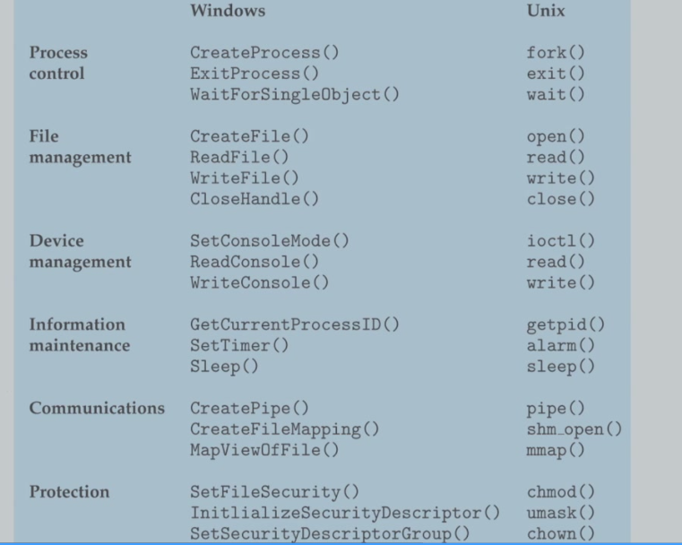
链接器和装载器
操作系统到底是如何执行一个程序的呢？以 C 为例，一个写完的代码需要经过编译、链接、装载三个步骤，才能成为一个在内存中的，可以被执行的程序。
-
编译器首先将若干
.c源文件编译为若干.o文件（这里合并了预处理、编译、汇编步骤），这些.o文件被称为可重定位目标文件(relocatable object file)，其存在形式为机器码 -
随后链接器将若干
.o文件连带所需要的一些库文件（如.a文件）链接为一个可执行目标文件(executable object file)。 -
静态链接将库文件的代码直接合并进入最终的可执行文件
-
动态链接仅仅将库文件的引用信息写入最终的可执行文件，而在程序运行时再去寻找这些库文件
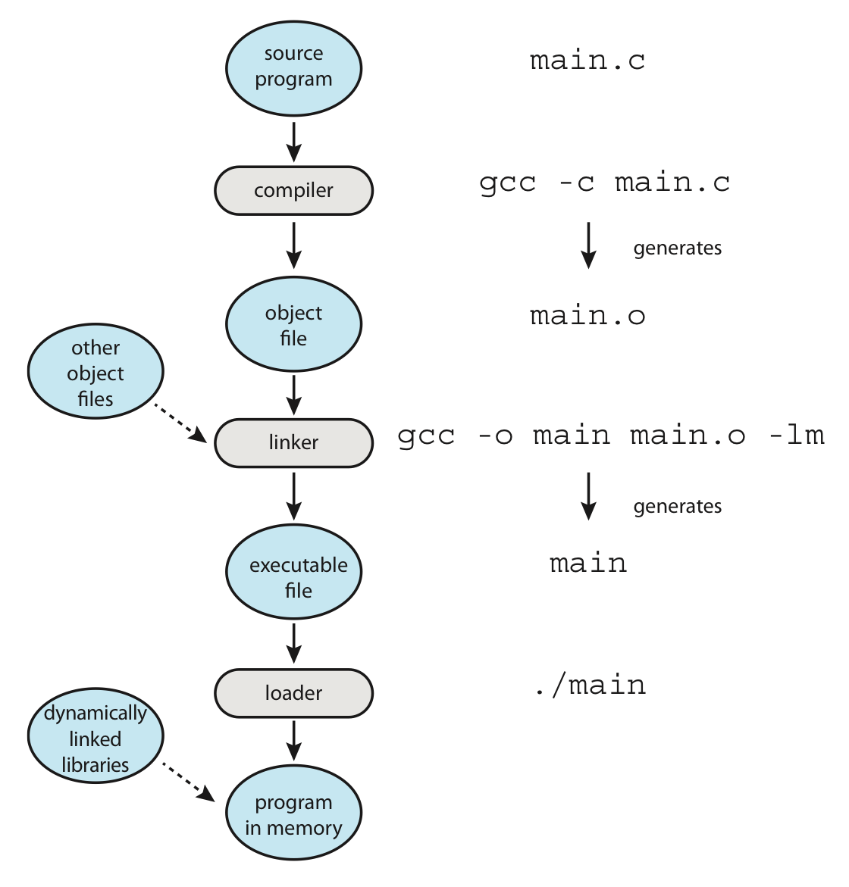
引导
- 在计算机刚刚启动，操作系统还未开始运行之前，需要开机后的第一个程序——引导加载器(bootstrap loader)来一步一步地初始化操作系统。对大多数操作系统来说，bootstrap 都会被存储在 ROM 中，并且需要在一个已知的位置
- Bootstrap loader 会载入更加复杂的，完整的 bootstrap，而包含 bootstrap 程序的分区就被称为引导分区(bootstrap partition)。
同步/异步IO
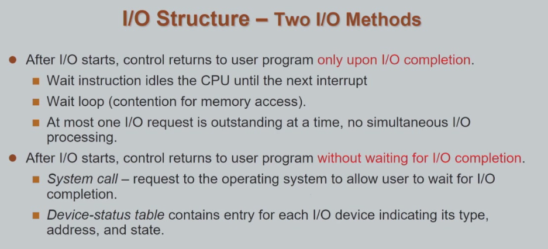
同步(synchronous)- 用户等待io操作的完成（控制权移交给操作系统直到io操作结束
异步（Asynchronous)- io操作启动以后用户发起io的请求后，控制权迅速返回调用程序，然后io操作再自己去进行（并记录好这个操作的有关信息比如是由哪个进程发起的 需要把得到的数据交给谁之类（device-status table
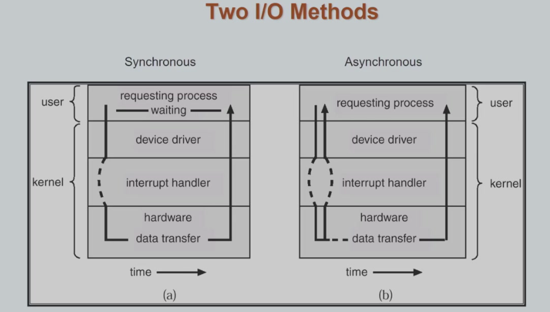
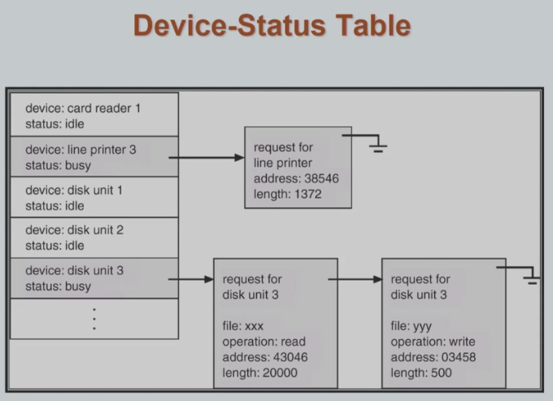
- io操作启动以后用户发起io的请求后，控制权迅速返回调用程序，然后io操作再自己去进行（并记录好这个操作的有关信息比如是由哪个进程发起的 需要把得到的数据交给谁之类（device-status table
三个management
process management
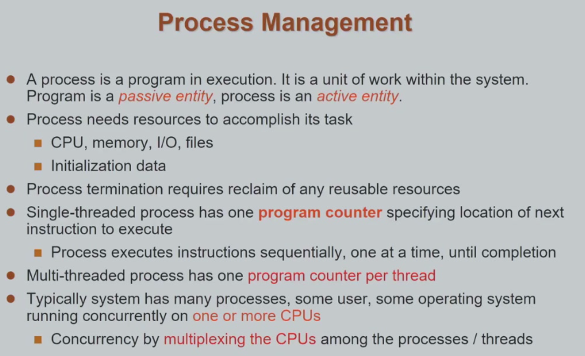
操作系统分配给进程一定的资源。进程在运行中需要始终拥有这些资源才能够运行完毕。
- program 静态概念
- process 运行中的动态实体（抽象概念
- 一个程序可以有多个运行中的进程
- 不同进程所占用的资源不同，因此可以说进程是一个资源分配的单位
- 进程又可以有对应的子进程（树状继承关系
进程当前指向的地址 pc寄存器
一个程序可能有多个执行的顺序 叫做thread线程
是否时在整个运行过程中，都要占有所有该进程需要的资源？
进程运行的各个生命周期，需要的资源不同。在需要的时候再进行占用，不需要的时候进行释放，提高了灵活性和资源利用率。
进程里面可以包含多个执行的序列：线程thread
线程：执行的最小单位
进程：分配资源的单位
- 进程的创建
- 进程的继承关系
- 交互的能力（给另一个进程发消息 signal
- 进程的状态
- 删除进程
- 多个进程之间共享内存（访问冲突
memory management
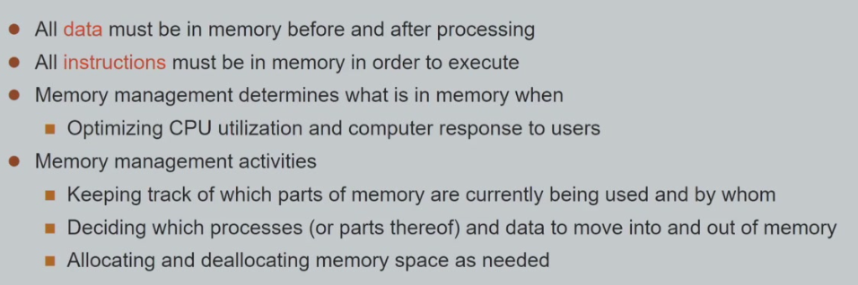
让进程能（按照权限/规定）了解到自己目前所拥有的内存（静态分配or动态分配）的结构，的视图。
storage management
在存储的介质上面（硬盘/SSD）
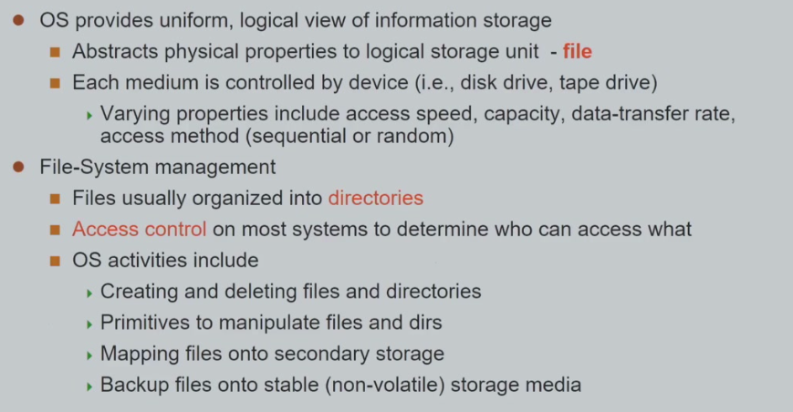
提供一个抽象的访问接口：文件file
文件的层结构：目录
文件访问的权限
文件是单个数据实体
文件系统是一整套文件以及管理目录的整体
磁盘上面分成若干块的partition 并赋予文件系统（一个盘符就代表一个单独的文件系统）
mass-storage management
海量存储管理，也就是磁盘管理
相较于面向用户的storage管理 更多的是面向硬件的管理
I/O subsystem
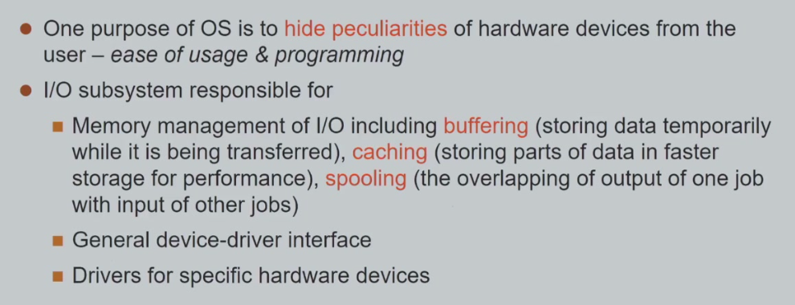
system call能否实现成为library（函数调用
存在安全性风险，比如软件调用特权指令等
虚拟机
本质其实是一种抽象
给上层提供和底层硬件一样的interface
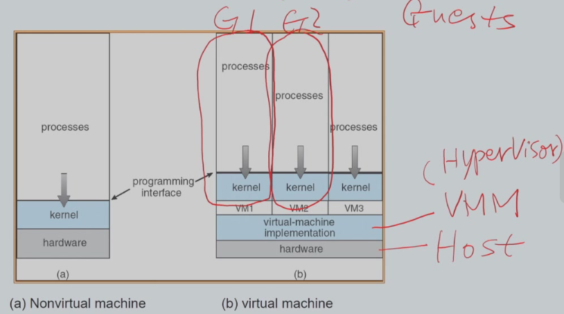
- hardware：host宿主机
- virtual machine managerVMM/hypervisor：提供了具备操作系统特性的一个基本的管理软件，提供接口供虚拟机运行，结构相对来说简单
- type1 裸金属的虚拟化baremtal hyperboza 比较好因为不需要完整的运行操作系统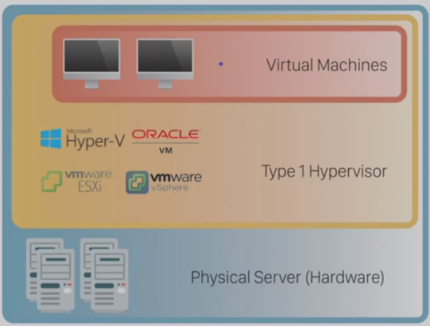
- type2 比如qemu 离不开地下原生os的运行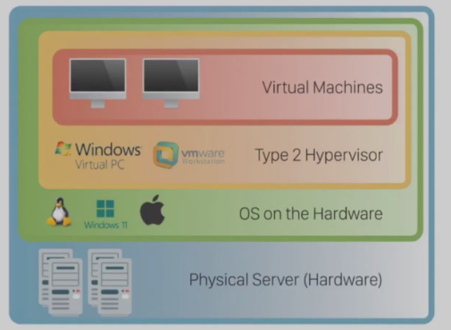
- guests：进程，可以运行多个进程（一个进程就是一个自成一体的完整操作系统 ）
对guestos不做修改：全虚拟化
对guestos做一点改动：半虚拟化，但是运行效率更高
sysgen ：device driver之类的配置
在操作系统power-on的过程中cpu执行的第一个软件（系统初始化自检硬件部分）：firmware固件
bootloader是加载操作系统用的（locate kernel image on disk 并且加载进ram，switching the cpu mode for kernel execution）